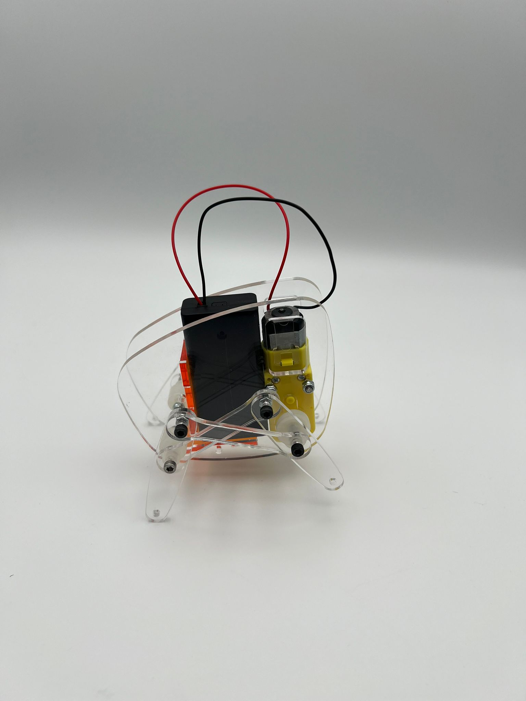
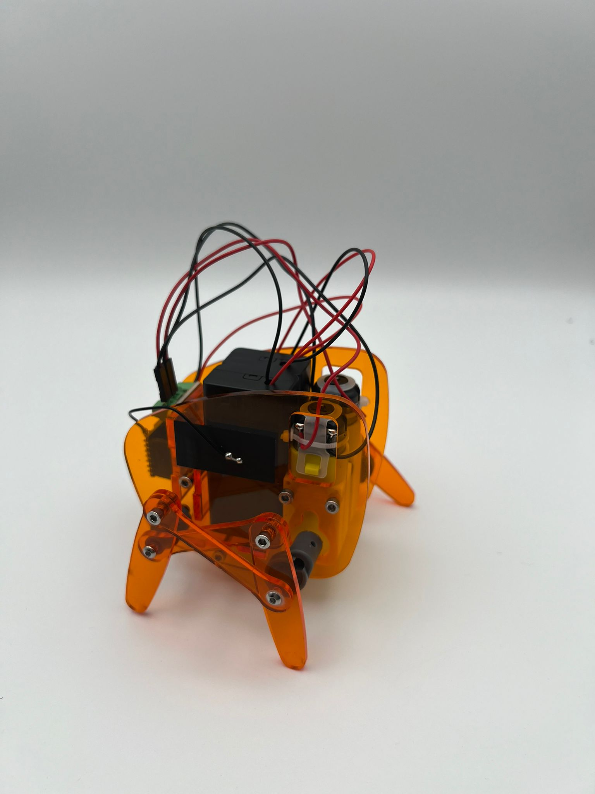
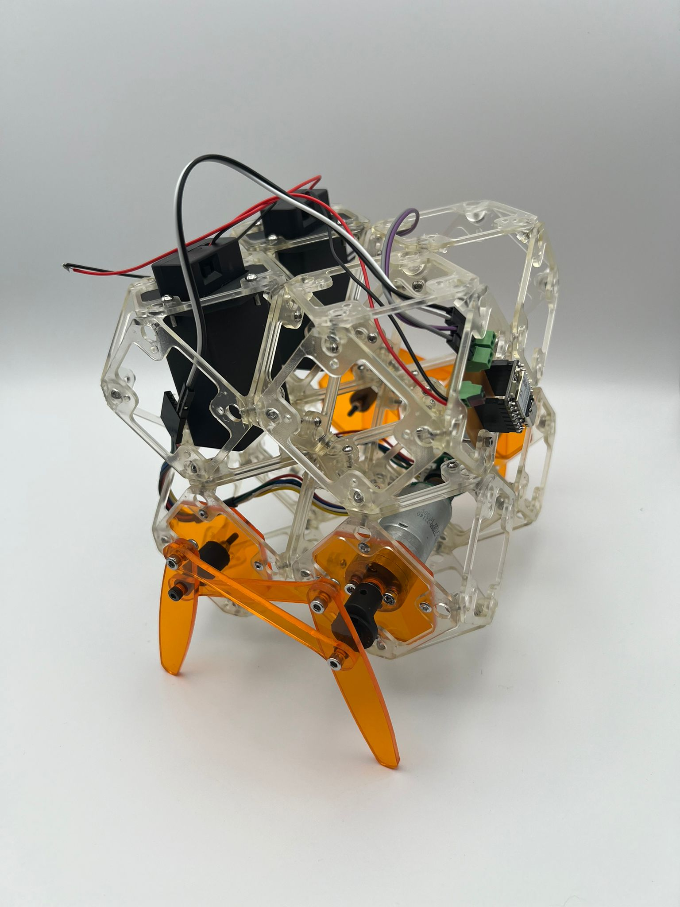

Mechanical linkage · Bluetooth control · Modular voxels
An iterative series of walking robot prototypes developed at the MIT Center for Bits and Atoms, progressing from a simple single-motor walker to a Bluetooth-controlled dual-motor platform and a modular voxel-based design.
A foundational prototype demonstrating basic walking motion using a single DC motor, battery power, and a mechanical linkage. The goal was to establish core movement with simplicity and reliability.

Version 1 adds a second motor for left/right turning and Bluetooth remote control via a joystick — introducing directional control and paving the way for more complex maneuvers.

Version 2 is a modular voxel-based robot where each module connects in different configurations, enabling customizable designs and functions — embodying modularity and adaptability for future assembly tasks.
